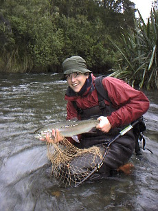
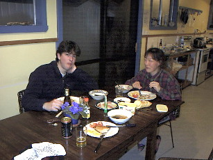

釣行日誌 ＮＺ編
初めてトンガリロ川の洗礼を受ける
2001/09/01-02 (SAT-SUN)
ベルギーから短期留学に来ているセバスチャン君と、タウポに向かう。金曜の夜に立ち、土日と釣って帰る強行軍である。
セバスチャン君は、ツランギの国立鱒類孵化場にて、魚類の耳石に含まれる化学物質の分析から、環境汚染の研究をしているのである。先月はまるまる一月ツランギに宿泊して研究＋釣りに没頭していたそうなので、今回の釣行のガイドを御願いすることになった。

セバスチャン君の、類い希な観察力、スポッティング能力、そして釣りの技術によって、初めてタウポ地区を釣る私としては、願ってもない釣果に恵まれることとなった。トンガリロの厚く重い流れには苦労したものの、なんとか粘って１尾釣る。水深40cmのポイントで。
結局、この週末は、遡上した鱒４尾を釣り、２尾をキープ。バラシが２尾。バックパッカーの安宿で、持参した刺身包丁と出刃包丁を駆使し、刺身醤油とワサビを味方に付け、極上の刺身とイクラサンドイッチを賞味する。

現時点における世界で２番目に幸せなオトコとなる。
2001/09/16 (SAT)
朝からＲ君の電話で起こされ、山岳渓流へ向かう。小雨の中、ニンフとドライのドロッパー仕掛けで鱒を狙うが、川は静まり返っている。曲がり角の淵で、突如深みからブラウンがドライフライに飛びつく。慌てて早あわせとなり、一瞬のファイトのあとで外れた。残念。
不完全燃焼のＲ君が、スプリングクリークへ行くと言い出したので、おとなしく従う。（笑）
浅場に定位している30cmほどのニジマスを、ドライで狙う。やはりドライフライは面白い。ニンフも面白いが、よほどたくさんアタリが無い限り、疲れてしまう。キャストにも、集中を持続するのにも。
2001/09/22 (SAT)
早朝からロトルアに向かう。目当ての川に着き、だれもいないことにうきうきしながら釣り道具をセットしていると、Fish and Game の看板に気づく。
看板曰く、解禁期間は12/01から6/30まで。
がちょーん。マーティンの自慢話を聞かされてはるばる来たのが運の尽き。しかたないので河口で１時間ほどニンフをロングキャストして探るが、なんの気配もなし。沖合でトローリングしているボート２隻も、まったく当たってないようだった。すごすごとスプリングクリークへ逃げ帰る。
合流点から入り、ニンフ、ドライ、ウェットライニングの三種の釣り方で、約20尾を釣る。平均体長23cm。（笑）
あああああ、オレにはこんな釣りが向いている。でも、ドライフライで気持ちよく釣れたので満足。
2001/09/23 (SUN)
昨日のロングキャストが祟り、肩が痛い。文字通り四十肩か。
山岳渓流のデカいブラウンがドライフライに出るさまを思い出したら、いても立ってもいられなくなり、昼から出かける。
途中のゴルフ場の桜並木が美しい。
ちぃ～とも出ないまま夕暮れを迎え、やっと出たライズを合わせ切れで逃す。
未熟さを改めて確認した早春の一日。
釣行日誌ＮＺ編 目次へ
サイトマップ
ホームへ
お問い合わせ